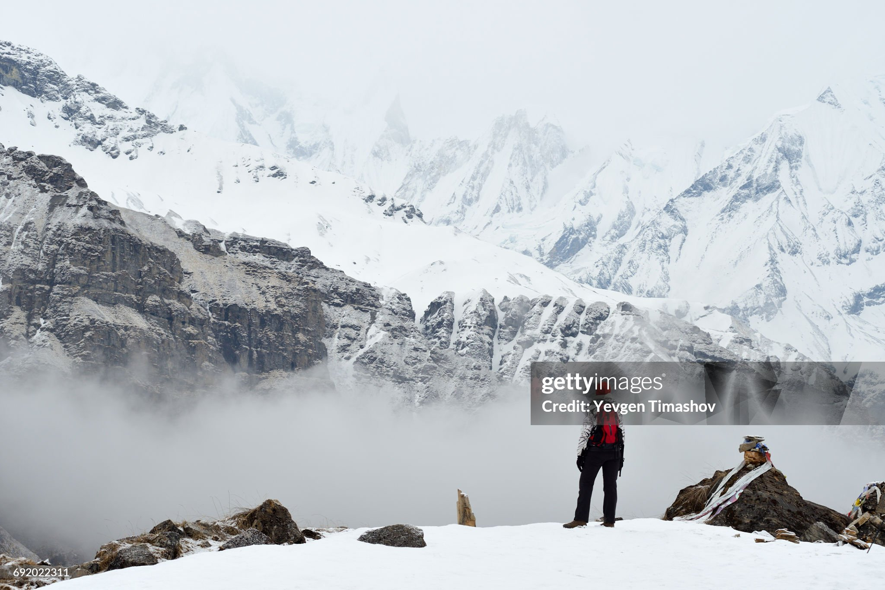

The Annapurna Base Camp Trek takes you through rhododendron forests, traditional Gurung villages, and finally to the base of the Annapurna massif at 4,130 meters.
The trek is known for its stunning mountain views, including Annapurna I, Machapuchare, and Hiunchuli. It is a moderate trek that can be completed in 7-12 days, depending on your pace and the route you choose.